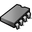
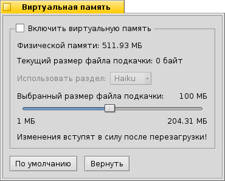

Русский
Русский Polski
Polski Română
Română Slovenčina
SlovenčinaВиртуальная память (VirtualMemory)
| Расположение в Deskbar: | ||
| Расположение в Tracker: | /boot/system/preferences/VirtualMemory | |
| Настройки хранятся по адресу: | ~/config/settings/kernel/drivers/virtual_memory ~/config/settings/VM_data - Хранит координаты окна. |
Виртуальная память позволяет системе осуществлять подкачку данных с диска, в случае если ОЗУ может быть использована более рационально для других задач. Даже если у вас установлен большой объем ОЗУ, использование виртуальной памяти не будет плохой идеей.
Вы можете установить объем виртуальной памяти значительно больший объема ОЗУ. С размерами современных жестких дисков выделение такого объема пространства не должно быть проблематичным. Конечно, в случае, если размер свободного места на диске невелик, вы можете легко уменьшить объем виртуальной памяти. Рекомендуется взглянуть на вывод программы Использования диска, чтобы понять, куда подевалось свободное место.
Обычно файл подкачки записывается на ваш загрузочный диск. Если вы сталкиваетесь с проблемами производительности дисковой подсистемы во время операций с виртуальной памятью, то вам следует попробовать использовать отдельный жесткий диск для файла подкачки. Выбор другого раздела на том же жестком диске не решит это проблему.
Естественно, самым эффективным решением станет повышение объема оперативной памяти.
| сбросить текущие настройки и установить их на значения по умолчанию. | ||
| возвращает настройки, активные на момент запуска программы Виртуальная память. |